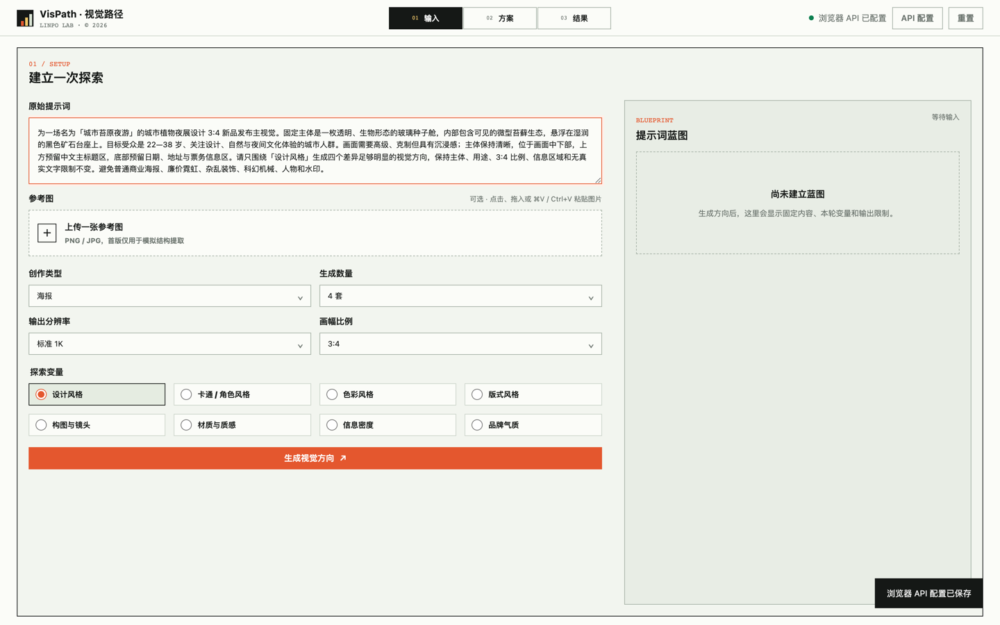
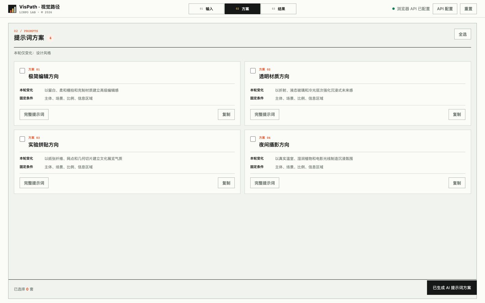
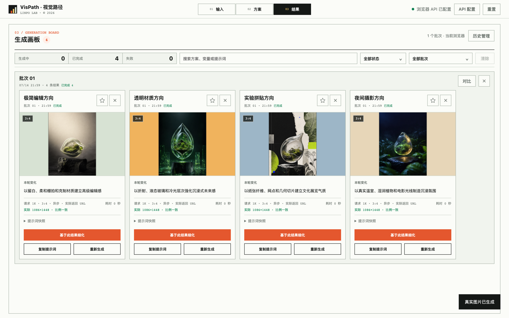
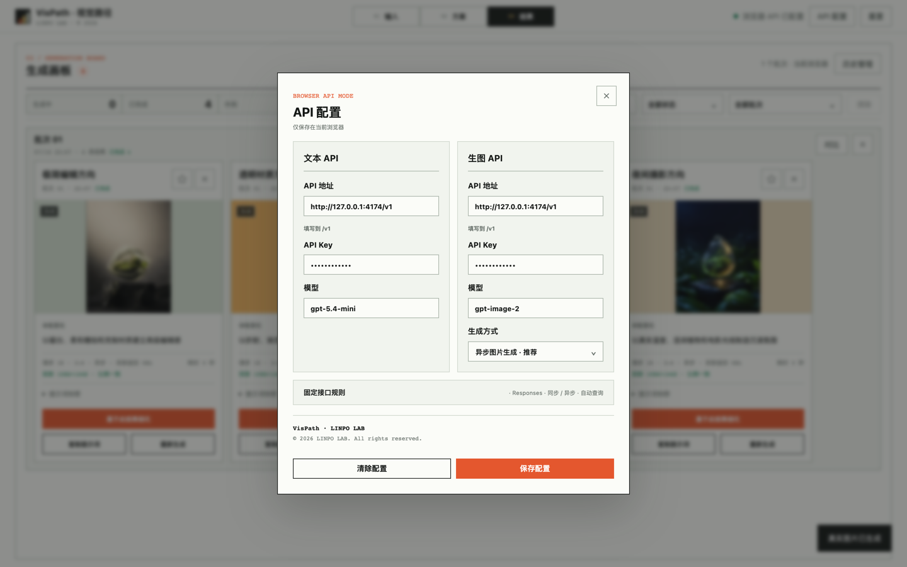

输入、方案、生成与比较的视觉探索闭环。
01 / 实验速览
先固定创作约束，再比较视觉变量带来的差异。
文本与参考图输入、真实生图和历史已跑通。
依赖用户配置的文本与生图接口。
三阶段核心流程与接口配置界面。
02 / 界面证据
从复杂输入到结果画板，证据沿同一条任务路径展开。
截图证明界面、状态和操作闭环已经实现，不代表模型输出始终稳定或视觉判断可以自动完成。
输入阶段把不变条件与本轮探索变量分开
原始提示词、参考图、比例和分辨率保持固定，本轮只选择一个视觉维度。

方案阶段生成四套可检查的视觉方向
每套方案明确本轮变化和固定条件，支持查看完整提示词并选择多个方向。

结果画板保留同批次比较与继续细化入口
真实图片、请求参数、返回尺寸和提示词快照被组织在同一个批次中。

文本与生图服务由使用者在浏览器配置
接口根地址、Key、模型和生成方式只保存在当前浏览器，不进入仓库。

03 / 运行边界
它帮助比较方向，不替代接口可靠性与人工视觉判断。
当前可以验证
单变量提示词方案、批量生图、结果比较和继续细化能否形成闭环。
运行依赖
文本与生图服务需兼容指定接口。配置、任务和结果保存在当前浏览器，主要面向宽度 901px 以上的电脑端。
当前不验证
不验证第三方接口长期稳定、模型审美一致、团队协作和云端资产管理。
04 / 工作流程
六个动作把一次模糊尝试变成可比较的方向实验。
01 · 输入提交提示词或参考图。
02 · 固定锁定主体、场景与输出条件。
03 · 变体只选择一个探索维度。
04 · 方案生成并选择多套提示词。
05 · 比较在同批次查看真实结果。
06 · 细化沿选中方向继续迭代。
系统与数据决策
文本服务负责生成结构化 PromptBlueprint 与方案，图片服务负责同步或异步生成。IndexedDB 保存白名单化历史、配置和未完成任务，刷新后可继续轮询。
05 / 实验结论
多方向比较闭环已经成立，判断质量仍依赖人与模型。
已成立
复杂输入可以被拆成固定条件与单一变量，并形成可选择、可生成、可追溯的多方向结果。
仍薄弱
不同接口与模型的输出一致性、长期任务恢复和方向质量仍缺少更大样本验证。